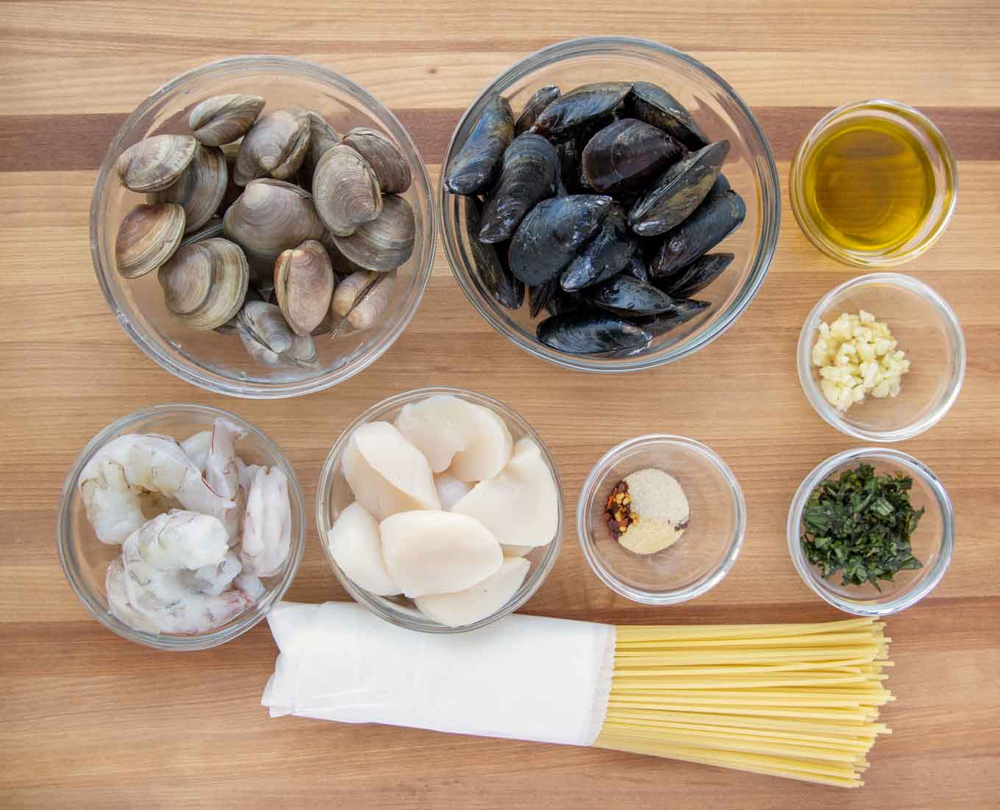
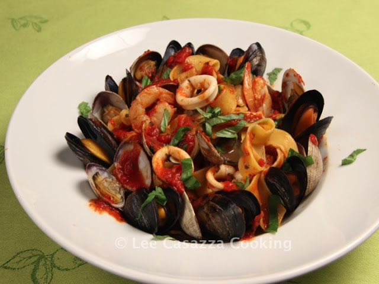

Spaghetti Frutti di Mare

The ultimate spaghetti Frutti di Mare (fruit of the sea) recipe, made with baby clams, mussels, squid and shrimp in a thick red homemade Arrabiata sauce.
Ingredients:
- Olive Oil
- Onion and garlic
- Crushed tomatoes
- Mussels
- Lemon
- Large shrimps, peeled and deveined
- Baby squid
- Chopped Parsley

Process to make the spaghetti:
Back To Top
Back To Main Page